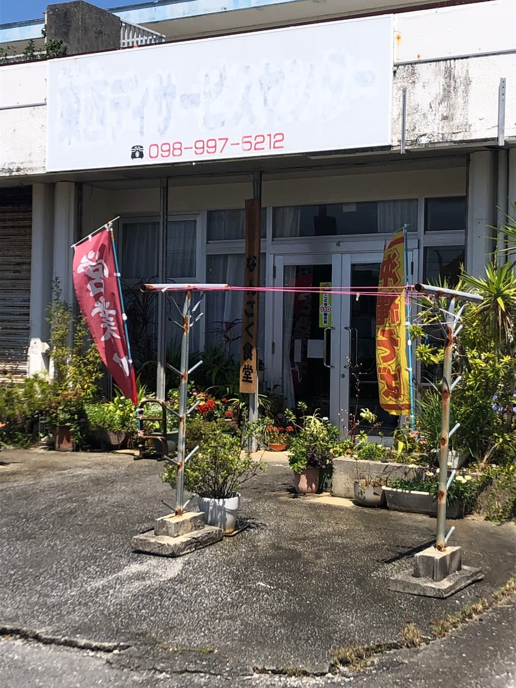
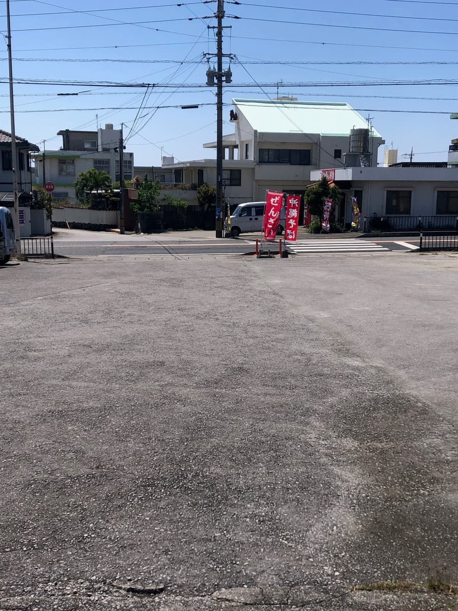
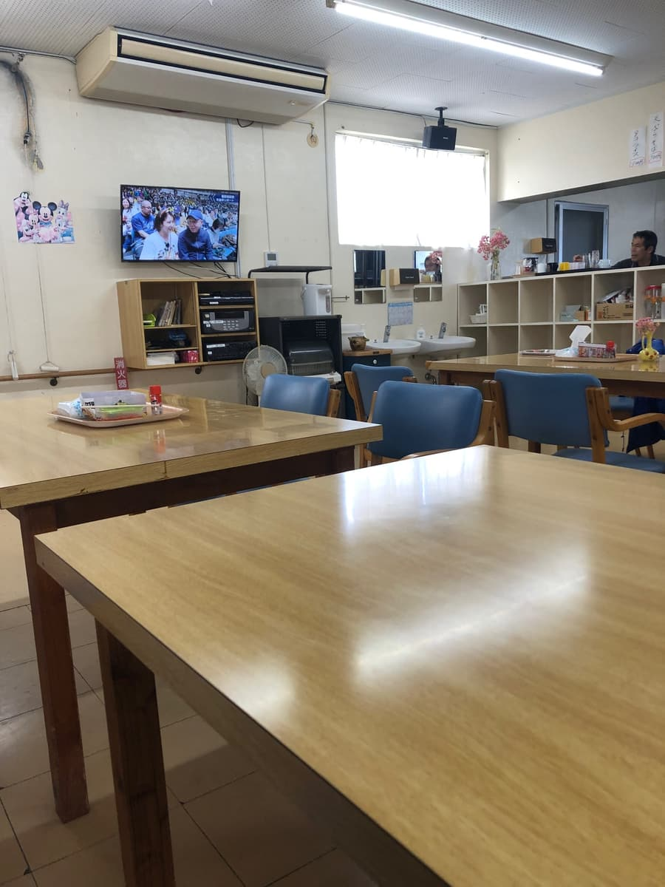
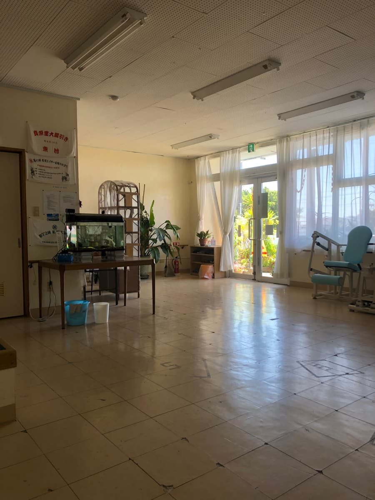
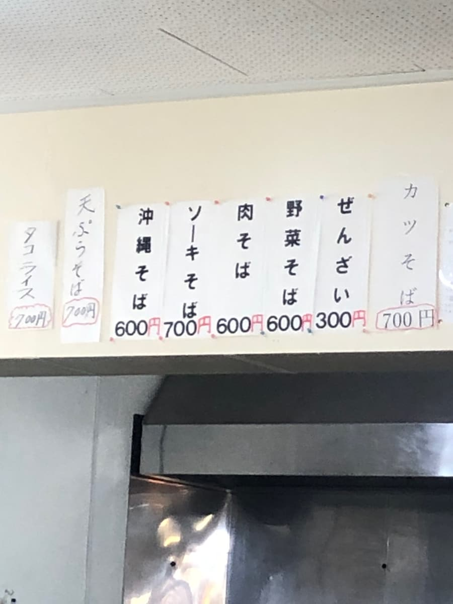
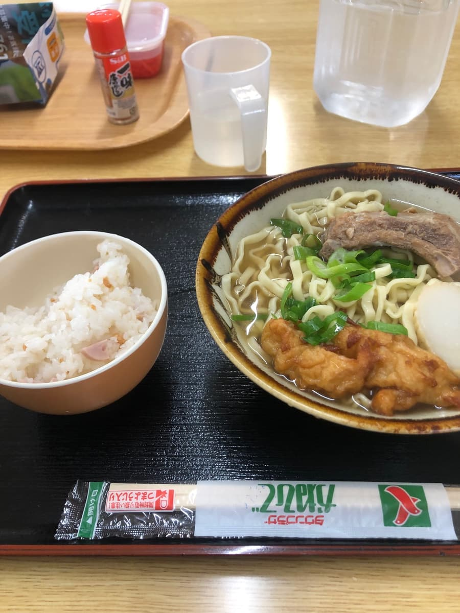
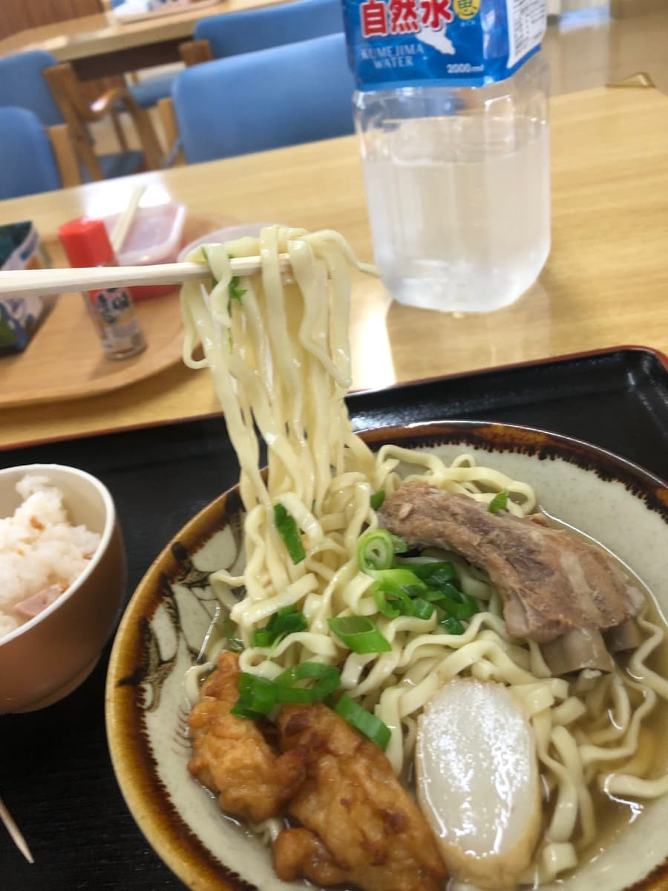

I went to "Nangoku Shokudo" in Komesu, Itoman, on my Okinawa soba tour 🌺🍜 I ate here in March 2025 😄

The shop had red banners out along the road, so even from a distance it had that "Ah, this must be it" feel 🚗✨ The exterior doesn't look new; it has the weathered look of an old-fashioned diner, and the sign is a little faded too, which gives it plenty of local character. Shops like this get me a little excited even before I go in 😊

The parking lot is quite spacious, and it's a nice plus that it's easy to get to by car 🅿️ The Komesu area of Itoman has a quiet, laid-back atmosphere different from the bustle of tourist spots, and it felt like I'd come to an old-fashioned Okinawan neighborhood diner 🌿 Red "Open" banners and "Okinawa Soba" banners were swaying in the wind, so even from outside it really had the atmosphere of a diner.


Inside, table seats are lined up in a fairly spacious room, and it felt like a place where you can sit comfortably. With blue chairs, wood-grain tables, a TV on the wall, self-serve water, and an old-fashioned air, it feels less like a shop built for tourists and more like a place where locals come for their everyday lunch 📺🍵 There's also an aquarium and plants inside, and it was nice that time seemed to flow somehow leisurely 🐟🌱 It's not flashy, but I don't dislike the air of a simple diner like this.

The menu was posted on the wall and included Okinawa soba, soki soba, meat soba, vegetable soba, zenzai, taco rice, tempura soba, katsu soba, and more 📄 Prices like ¥600 for Okinawa soba and ¥700 for soki soba feel very reasonable considering the times 💰 This time I ordered the soki soba, and it's nice that complimentary rice comes with it 🍚 What's more, that rice isn't just plain white rice; it has little chopped pieces of fish sausage in it. I'd hardly ever seen this at other shops, and it had an amusing original touch 😳

The soki soba that was brought out looked simple, but it had pork spare ribs (soki), green onions, fish cake (kamaboko), and also Yaeyama fish cake 🍜✨ Yaeyama fish cake on Okinawa soba felt quite rare to me. It's a topping you don't often see at other shops, so this left a bit of an impression. Just having the rounded Yaeyama fish cake instead of regular fish cake gave it a little personality in looks, too.
The broth is pork-bone-based 🐷 It does have a gentle, diner-style flavor, but it didn't have much of the pull that makes you think, "I want to eat this again soon." To be honest, my impression was that the broth was pretty ordinary.

The noodles are medium-thin, wavy flat noodles 🥢 As you can see in the photo, they're the type that's a bit flat with a loose wave. The texture is on the soft side. I prefer a bit more chewiness and springiness 🍜 My impression here was also that they're ordinary.
The soki was on the light side 🍖 Rather than being thoroughly soaked in a sweet-savory flavor and meltingly tender, it had a simple, restrained seasoning; if the flavor were soaked in a bit more and the meat's savoriness came forward more, I think the impression of the whole bowl would improve. The Yaeyama fish cake was unusual and nice, but looking at the toppings as a whole, they didn't move me all that much.
The complimentary rice with chopped fish sausage in it is truly unique 🍚🌭 Taste-wise, rather than being very special, it's homey and simple. Eaten together with the soba it fills you up properly, so considering you get soki soba and rice for ¥700, the value isn't bad 👍 However, even including the rice, my overall impression still settled on "it's ordinary."
Rating (9/15): I think Nangoku Shokudo is less the type of famous shop that leaves a strong impression with the polish of its flavor, and more a shop for enjoying the atmosphere of an old-fashioned local diner 🌺 The relaxed interior, spacious parking lot, reasonable prices, and complimentary rice were all good points 😊 However, if you ask whether it's worth making a special trip from far away for an Okinawa soba tour, I'd say not quite. It did have personality with the Yaeyama fish cake and the rice with fish sausage, but the noodles, broth, and toppings were all average, and overall it felt like a bowl for everyday use 🍜✨
Noodles: ★★★☆☆（3）
Soup: ★★★☆☆（3）
Toppings: ★★★☆☆（3）